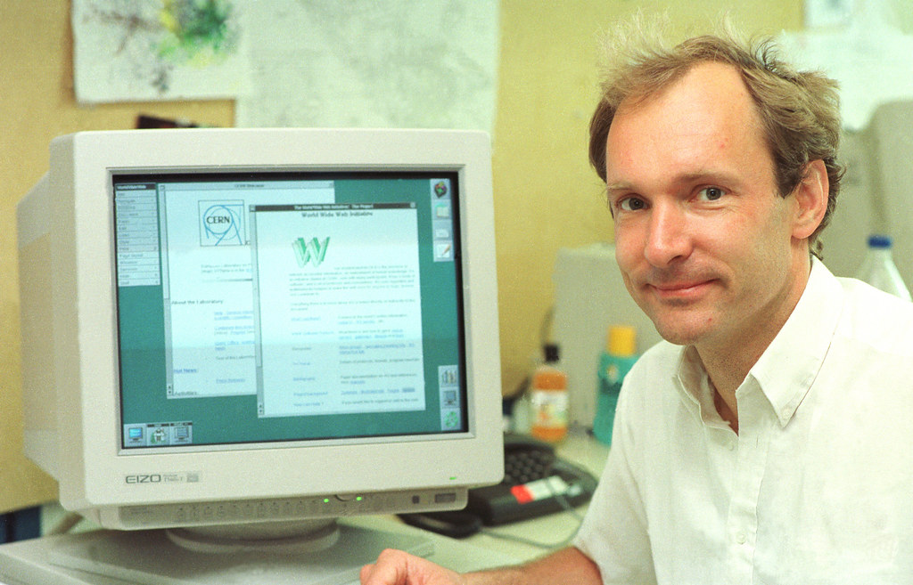
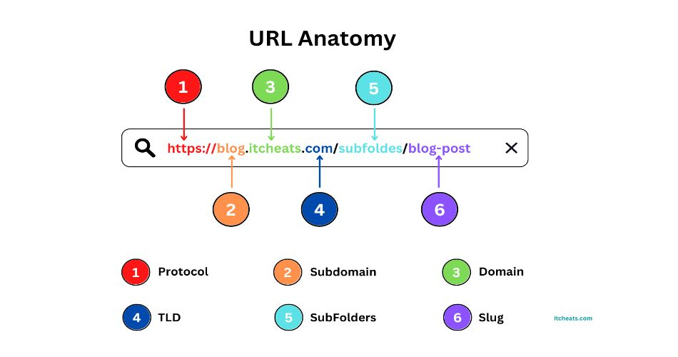

Avant de lire cette page ouvrez cette vidéo
Tout commence en 1989 lorsque Tim Berners-Lee, un ingénieur informatique travaillant au CERN en Suisse, imagine un système permettant aux chercheurs de partager facilement des documents grâce à des liens hypertextes. Le premier serveur web est nxoc01.cern.ch ; la première page web est http://nxoc01.cern.ch/hypertext/WWW/TheProject.html Tim Berners-Lee veut donc créer un espace plus simple où chacun pourrait consulter des informations depuis un ordinateur connecté à un réseau mondial. Il développe plusieurs technologies fondamentales encore utilisées aujourd’hui : le langage HTML

Comme son nom l'indique, HTML permet d’écrire de l’hypertexte. Il permet aussi de structurer sémantiquement le texte, de créer des formulaires de saisie, d’inclure des ressources multimédias dont des images, des vidéos et des programmes informatiques. Il a été conçu pour créer des documents interopérables avec des équipements informatiques variés ; l’accessibilité du web est ainsi accrue en supportant des équipements destinés aux handicapés.
Une URL est une chaîne de caractères combinant les informations nécessaires pour indiquer à un logiciel comment accéder à une ressource Internet. Ces informations peuvent notamment comprendre le protocole de communication, un nom d'utilisateur, un mot de passe, une adresse IP ou un nom de domaine, un numéro de port TCP/IP, un chemin d'accès, une requête Pour créer les pages web, le protocole HTTP pour permettre aux ordinateurs de communiquer entre eux, ainsi que les premières adresses URL permettant de localiser les pages sur Internet. Une URL (Uniform Resource Locator), informellement appelée adresse web, est une chaîne de caractères qui indique sous une forme standardisée comment accéder à une ressource du World Wide Web à travers Internet
